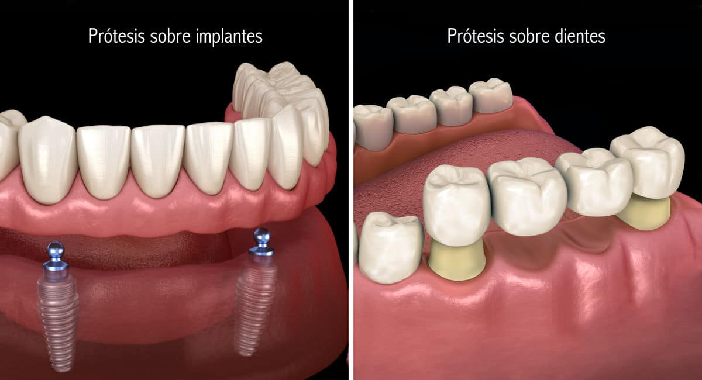

Protesis Dental

¿Qué es una prótesis dental?
Si has escuchado el término prótesis dental, probablemente has imaginado algún tipo de tratamiento que sustituye una parte dañada de la dentadura por otra artificial. Y sí, es así, tus intuiciones van bien encaminadas.
En primer lugar, “prótesis dental” es el nombre de la especialidad de odontología que se encarga de reemplazar los dientes dañados o perdidos por otros artificiales, que realizamos con materiales como resinas o cerámicas. Por esa razón, el especialista de esta rama es conocido como prostodoncista, distinto al protésico dental, que no es odontólogo.
Pero también hablamos de prótesis dental para referirnos a las soluciones que esta rama odontológica ofrece a los pacientes, y que permiten reponer su dentadura y restaurar su funcionalidad.
Tipos de Prótesis Dentales
Hay dos soluciones diferentes para reponer los dientes de un paciente mediante prótesis, dependiendo del caso del que se trate.
Existen dos tipos de prótesis dentales:
- Prótesis fijas: no pueden ser retiradas por el paciente; Es la opción más cómoda para los pacientes, dado que, tras colocarlas, pueden utilizarlas como si se tratara de sus dientes naturales.
- Prótesis removibles: los pacientes pueden retirarlas, y de hecho deben hacerlo para cumplir una rutina diaria de limpieza. A pesar de sus inconvenientes respecto a las prótesis fijas, tienen a su favor un precio más económico.
Ahora ya conoces los distintos tipos de prótesis dentales, dependiendo de si se pueden o no retirar fácilmente. ¡Sigamos con los diferentes tratamientos!
Diferentes tratamientos con prótesis dentales
- Prótesis dental sobre implante
- Prótesis dental sobre diente
- Prótesis remomible
Es una de las técnicas mediante las cuales podemos colocar prótesis fijas en los pacientes. Tras insertar unos implantes dentales en los maxilares, se montan sobre ellos las prótesis con los dientes artificiales. Decimos entonces que se trata de una prótesis implantosoportada.
En condiciones normales, la estabilidad y sujeción de las prótesis dentales sobre implantes es superior a la de cualquier otro tratamiento.
Los implantes, además, realizan una función de conservación del hueso alveolar, que se preserva como si todavía albergara las raíces naturales de tus dientes.
A veces no es necesario colocar una prótesis implantosoportada, y se pueden colocar sobre los propios dientes del paciente. En ese caso, decimos que son “dentosoportadas”.
Los dientes naturales del paciente deben ser previamente rebajados o tallados. Sobre ellos se cementan los dientes artificiales.
Es un buen tratamiento para solucionar problemas provocados por traumatismos, aunque también por daños ocasionados por la caries.
Popularmente conocida como “dentadura postiza”, la prótesis removible puede ser retirada por el paciente para su correcta higiene.
Las prótesis removibles se crean de forma que se adapten a los maxilares y a los tejidos sobre los que se apoyan, de modo que precisan diversos ajustes antes de adquirir su forma definitiva.
Esta técnica está indicada para pacientes que han experimentado un gran número de pérdidas dentales y no se les van a reponer con implantes.
¿Quién llevará a cabo tu tratamiento con prótesis dentales?
Si estás decidido o decidida a recuperar tus piezas dentales, en nuestra clínica dispones de un valor añadido: la tranquilidad de ponerte en manos del Dr. Benito Camela, uno de los odontólogos más reconocidos de Madrid con más de 25 años de experiencia.
El Dr. Camela es especialista en estética dental, prótesis dentales e implantes. Además de su trabajo al frente de la clínica, Luciano ha impartido cursos de Máster en la Universidad Complutense, en la Autónoma y en la Universidad Europea de Madrid.
Su prestigio le ha llevado a colaborar con todo tipo de sociedades científicas nacionales vinculadas a la odontología, y entre las cuales ha ejercido diversos cargos de responsabilidad.
En la clínica del Dr. Benito Camela recibirás todo el asesoramiento especializado. Analizamos minuciosamente tu caso para ofrecerte la mejor solución a tu problema.
Con tu prótesis dental, recuperarás tus dientes; ¡recuperarás tu sonrisa!